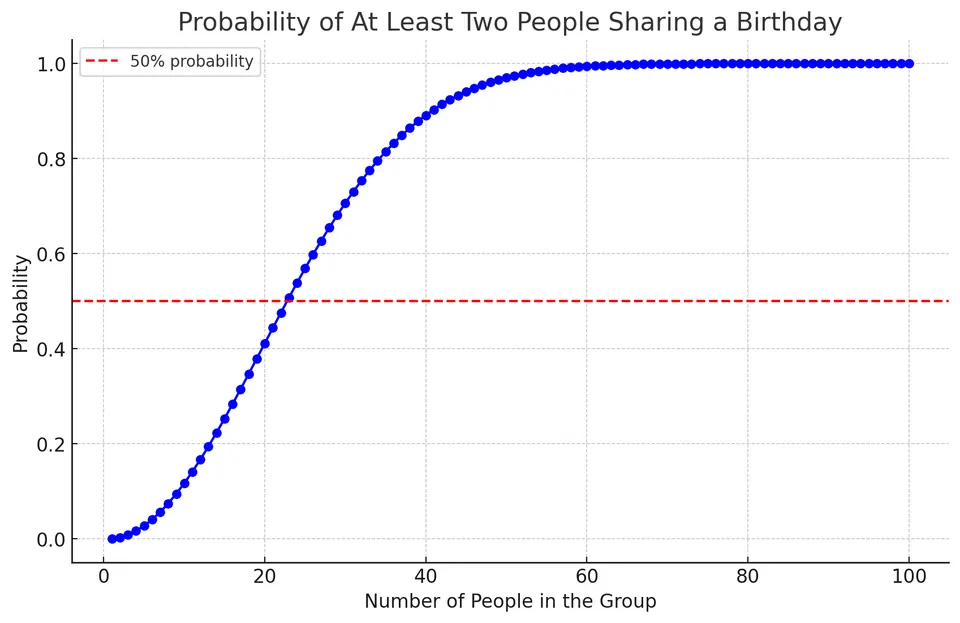

Bayesian and frequentist statistics are two major approaches to statistical inference. Both use sample data to learn about an underlying population or data-generating process, but they differ in how they interpret probability, represent uncertainty, and draw conclusions about unknown parameters.
A useful distinction is:
| AspectFrequentistBayesian | ||
|---|---|---|
| Unknown parameter | Fixed but unknown | Represented by a probability distribution |
| Probability | Long-run behavior of repeated experiments | Quantifies uncertainty given a model and available information |
| Prior information | Not represented through a prior distribution | Encoded through a prior distribution |
| Main inferential output | Point estimates, confidence intervals, hypothesis tests | Posterior distributions, credible intervals, posterior probabilities |
| Data | Random before observation | Observed data are treated as fixed once collected |
| Parameter uncertainty | Described through sampling procedures | Described directly by the posterior distribution |
Neither framework is universally better. The appropriate choice depends on the problem, the model, the available information, and the type of conclusion we want to make.
A frequentist does not normally assign a probability distribution to a fixed parameter itself. Instead, probability statements describe the behavior of data, estimators, and procedures under repeated sampling.
In the frequentist interpretation, probability is connected to the long-run frequency of events under repeated trials. For example, if a fair coin is tossed many times, the proportion of heads is expected to approach $0.5$.
An estimator such as the sample mean $\bar{x}$ or sample proportion $\hat p$ varies from sample to sample. Its sampling distribution describes this variation and forms the basis of standard errors, confidence intervals, and hypothesis tests.
In hypothesis testing, a test statistic measures how far the observed data depart from what would typically be expected under the null hypothesis.
The p-value is the probability, assuming the null hypothesis and the statistical model are correct, of obtaining a test statistic at least as extreme as the one observed.
It is important that:
$$ \text{p-value} \neq P(H_0 \mid \text{data}) $$
A p-value does not give the probability that the null hypothesis is true.
These limitations are properties of particular methods and interpretations, not evidence that frequentist statistics is inherently unreliable.
Suppose the attribute of interest is represented by X, while O represents its absence. For illustration, imagine the following population:
Population:
O O X O O O X X O X
A random sample of four items gives:
Sample:
X O O X
The observed sample proportion is:
$$ \hat p = \frac{2}{4} = 0.50 $$
A frequentist can use $\hat p$ as a point estimate of the unknown population proportion $p$.
There is an important modeling detail here: if the entire 10-item population shown above were actually known, there would be no need to estimate its proportion—we could calculate it exactly. The example should therefore be understood as an illustration of sampling, with the full population shown only for intuition.
For the standard calculations below, we use the usual Bernoulli/binomial approximation. If the target really were a small finite population sampled without replacement, a finite-population or hypergeometric model would be more appropriate.
| StepEquationPlugging the numbers | ||
|---|---|---|
| Point estimate | $\hat p=x/n$ | $\hat p=2/4=0.50$ |
| Standard error | $SE(\hat p)=\sqrt{\hat p(1-\hat p)/n}$ | $\sqrt{0.5(1-0.5)/4}=0.25$ |
| 95% Wald confidence interval | $\hat p\pm z\_{0.975}SE(\hat p)$, where $z\_{0.975}=1.96$ | $0.50\pm1.96(0.25)\approx[0.01,0.99]$ |
| Null-hypothesis test $H\_0\:p=p\_0$ | $z=(\hat p-p\_0)/\sqrt{p\_0(1-p\_0)/n}$ | For $p\_0=0.5$, $z=0$ and the two-sided p-value is $1$ |
The Wald interval is shown because it follows directly from the familiar standard-error formula, but with only four observations it is not a reliable confidence interval. Methods such as the Wilson or exact binomial interval are preferable for such a small sample.
This illustrates an important frequentist idea: the estimate is based entirely on the observed sample, while its uncertainty is evaluated through the sampling behavior of the estimator.
Bayesian statistics represents uncertainty about unknown parameters using probability distributions.
Saying that a Bayesian parameter is "random" does not necessarily mean that the underlying physical quantity is changing randomly. Rather, a probability distribution is used to represent our uncertainty about its unknown value.
Bayes' theorem is the foundation of Bayesian inference:
$$ P(\theta \mid D) = \frac{P(D\mid\theta)P(\theta)} {P(D)} $$
where:
Because $P(D)$ does not depend on $\theta$, the relationship is often written as:
$$ \text{Posterior} \propto \text{Likelihood} \times \text{Prior} $$
The denominator,
$$ P(D) = \int P(D\mid\theta)P(\theta)\,d\theta, $$
normalizes the posterior so that it forms a valid probability distribution.
Bayesian probability can therefore be used to quantify uncertainty about events, hypotheses, predictions, and unknown parameters given a specified model and available information.
A prior distribution can represent previous studies, domain knowledge, physical constraints, or weak background information.
For example, when modeling snake lifespans, biological knowledge tells us that values near 10 or 20 years may be plausible for some species, while a lifespan of 1000 years is not. A prior can encode this information without claiming that we know the exact lifespan in advance.
Priors can vary in strength:
After observing data, Bayes' theorem combines the prior with the likelihood to produce the posterior distribution.
As the amount of informative data increases, the likelihood often has more influence on the posterior and the effect of a reasonable prior becomes smaller.
$$ P(\theta>0\mid D) $$
or
$$ P(a<\theta<b\mid D). $$
Suppose we want to estimate the probability $p$ that a coin lands heads.
We begin with a Beta(1,1) prior:
$$ p\sim\mathrm{Beta}(1,1) $$
The Beta(1,1) distribution is uniform over $[0,1]$, meaning that before observing the data, every value of $p$ between 0 and 1 has the same prior density.
It is important not to interpret the prior as simply:
Prior:
H: 0.5, T: 0.5
The prior is a distribution over the unknown parameter $p$, not a statement that the parameter must equal $0.5$.
Now flip the coin three times and observe:
Data:
H H H
For a Beta prior and binomial likelihood, the posterior is also a Beta distribution. If:
$$ p\sim\mathrm{Beta}(a,b) $$
and we observe $x$ heads in $n$ flips, then:
$$ p\mid D \sim \mathrm{Beta}(a+x,b+n-x) $$
Here:
$$ a=1,\qquad b=1,\qquad x=3,\qquad n=3 $$
so:
$$ p\mid D \sim \mathrm{Beta}(4,1) $$
The posterior mean is:
$$ E[p\mid D] = \frac{4}{5} = 0.8 $$
Therefore, after observing three heads, our posterior mean estimate of the probability of heads is $0.8$.
This value also equals the posterior predictive probability of heads on the next flip:
$$ P(\text{next flip is H}\mid D)=0.8 $$
so the prediction for the next flip can be summarized as:
Posterior predictive probability:
H: 0.8
T: 0.2
This is different from saying that the posterior distribution itself consists only of the values $0.8$ and $0.2$.
| StepEquationPlugging the numbers | ||
|---|---|---|
| Prior density | $f(p)=\dfrac{\Gamma(a+b)}{\Gamma(a)\Gamma(b)}p^{a-1}(1-p)^{b-1}$ | $a=b=1\Rightarrow f(p)=1$ for $p\in[0,1]$ |
| Likelihood | $L(p)\propto p^x(1-p)^{n-x}$ | $p^3(1-p)^0=p^3$ |
| Posterior | $p\mid D\sim\mathrm{Beta}(a+x,b+n-x)$ | $\mathrm{Beta}(4,1)$ |
| Posterior mean | $E[p\mid D]=\dfrac{a+x}{a+b+n}$ | $\dfrac45=0.8$ |
| 95% credible interval | 0.025 and 0.975 quantiles of $\mathrm{Beta}(4,1)$ | $\approx[0.398,0.994]$ |
The interval is wide because only three observations have been collected. Although all three flips were heads, there is still substantial uncertainty about the underlying value of $p$.
Bayesian and frequentist procedures often produce similar numerical estimates when the sample size becomes large, provided the statistical model is regular and the prior does not rule out parameter values strongly supported by the data.
The prior does not necessarily need to be completely "non-informative." Under many common conditions, the influence of a reasonable prior decreases as the amount of data grows.
For example, both approaches may eventually produce estimates close to the maximum-likelihood estimate.
Their interpretations, however, remain different.
A frequentist 95% confidence interval is generated by a procedure with 95% long-run coverage under its assumptions.
A Bayesian 95% credible interval means:
$$ P(\theta\in C\mid D)=0.95 $$
under the chosen Bayesian model and prior.
Numerically similar intervals therefore do not have identical interpretations.
Bayesian and frequentist analyses can differ substantially when:
A Bayesian method is not automatically more accurate in these situations. Its advantage is that additional information can be incorporated through the prior. Whether that improves inference depends on whether the prior and model are appropriate.
Similarly, frequentist methods are not restricted to simple models. Modern frequentist statistics includes likelihood-based inference, mixed models, penalized estimation, bootstrap methods, and many other techniques designed for complex problems.
$$ (4.44,\;5.15) $$
The point estimate comes directly from the observed sample. The confidence interval is interpreted through repeated sampling: if we repeatedly generated samples and constructed intervals using the same procedure, approximately 95% of those intervals would contain the true population mean, assuming the model is correct.
$$ (4.42,\;5.18) $$
The credible interval has a different interpretation: conditional on the model, prior, and observed data, the population mean has 95% posterior probability of lying inside this interval.

The analysis results are:
The numerical results are similar because the dataset contains enough information for the likelihood to dominate much of the inference. The important difference is therefore not simply the final numbers, but how uncertainty is represented and how each interval should be interpreted.
In practice, Bayesian and frequentist statistics should not be viewed as competing recipes that always produce different answers. They are different inferential frameworks. Understanding their assumptions and interpretations is more important than treating either approach as universally superior.